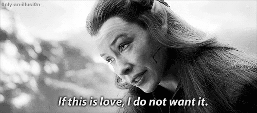

Cheating:
Do you have suspicion that your partner is cheating. Here are some signs of a cheating partner: - Is there a time when he/she is unreachable? - Secretive phone call or computer uses - Your partner is hostile - Their texts gets shorter and they take longer to answer. If you suspect your partner is cheating, talk to them. If they get mad, do not automatically assume they are cheating. It never feels good when you are being accused of cheating on a loved one. Trust them until they give you a reason not to. If you have a valid proof that they are cheating, then you should break up with them.Love someone else:
Do you have feelings for someone else? First break up with your current partner. They should not feel devoted to you to them unless you are devoted to them as well. If you need time to figure out your feelings, do it without giving your current partner the hope that you only love him/her.Move on:
Baby, you and your ex are broken up. AND IT IS OKAY!! If you guys broke up, it was for a good reason. Do not waste time grieving. Live life and be happy. Do not let a break up stop you.Get out of the friend zone:
At one point, you are going to have feelings for your friend. It is time to get out of the friend-zone! The easiest way is to just tell them about your feelings. If you are scared, you can always casually drop hint and flirt with them to see their response.When is the right time to have sex:
You should talk to your partner about this topic. But do not pressure eachother into sex. Respect each others decisions. You need to be ready for the next step. If you feel like he is the one then go for it, but talk to him first.
When to leave:
If you do not know when to leave, here are some tips. - If you do not have feelings for your partner, its time - If you are not happy, its time There are many ways to leave someone, some are: - Talk to them, let them down gently(we advise to do this) face-2-face - Do not use the cheesy line, 'it is not you, it is me'. If you are going to leave someone, leave them do not stall. Go straight to the pointToxic Relationship:
If you are not sure you are in a toxic relationship, here are some signs: - All talk, no give - Lack of trust - 24/7 arguments - No life without the other - Constant cheating/abuse - Second option. If some of these signs are present. IT IS TIME TO LEAVE THE RELATIONSHIP.